Endings - High Bandwidth


Selectable Characters:
Cassie Cage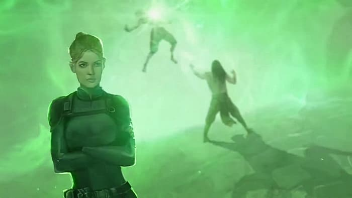 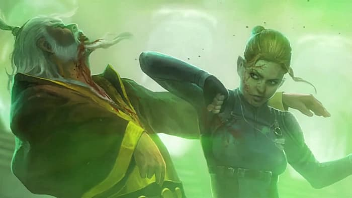 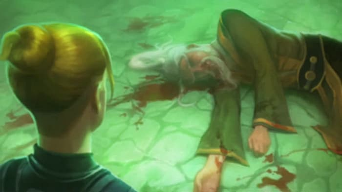
Cassie Cage's impressive victory over Shinnok led Raiden to give her a new important task: hunting down a soul stealer. Cassie did not have to be told that the suspect could be a resurrected Shang Tsung.
Having tracked him from the site of his last known assault, Cassie confronted the withered old man. He fought desperately but was ultimately defeated.
As the old man lay dying before her, Cassie asked his name. With a mixture of sadness and relief, he whispered, "Shujinko."
D'Vorah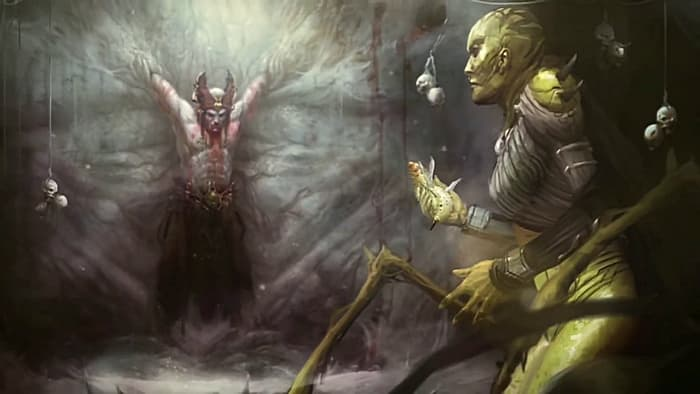 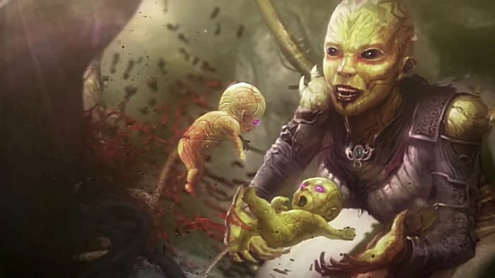 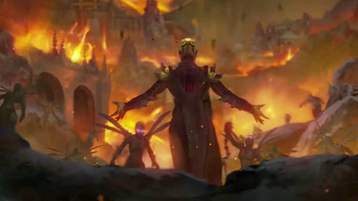
D'Vorah's ultimate plan was not to destroy Shinnok, but to enslave him. She implanted larvae - her young - in his body to gestate.
Having consumed the godlike power of their immortal host, D'Vorah's offspring were unlike any Kytinn ever born.
As they matured, they spread like locusts throughout the realms. Her army of Kytinn super-drones brought glory to D'Vorah, their beloved queen - and destruction to all.
Ermac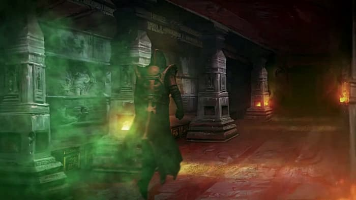 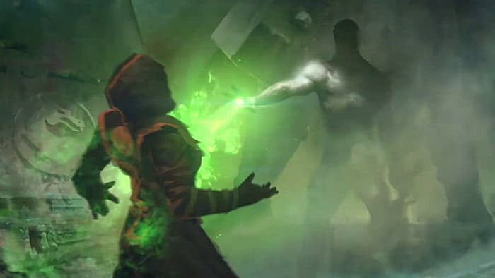 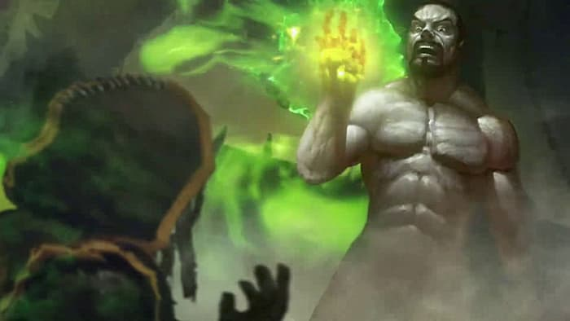
Alone once more, Ermac searched the labyrinthine corridors of Shao Kahn's old fortress - searching for the source of a faint voice calling to him.
Suddenly a wisp of dust brushed his chest, wrenching free one of his many souls. The dust took the form of a man, who began to consume soul after soul.
As the weakened Ermac stared helplessly, he recognized the mysterious figure: the sorcerer Shang Tsung. Returned from death.
Erron Black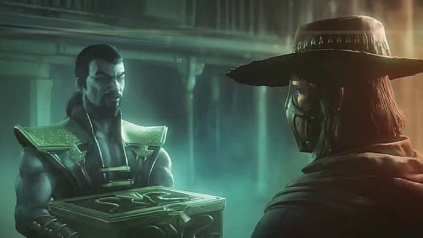 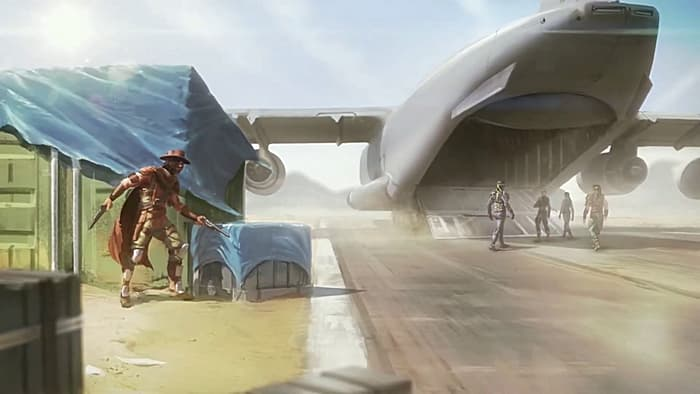 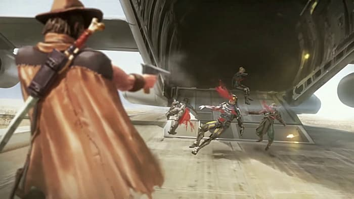
Nearly 150 years ago, Erron Black had been hired by Shang Tsung to assassinate an Earthrealm warrior. In return, Shang had slowed Black's aging process. He could therefore afford to be patient. If an employer wanted someone dead, they would be in time.
A team of young Earthrealm warriors had caused Erron Black's current employer, Kotal Kahn, much inconvenience.
With the patience of a viper, Black eliminated them all.
Ferra/Torr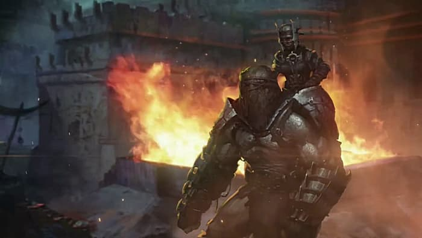 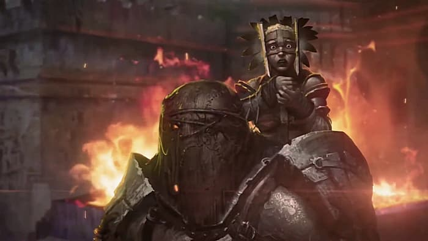 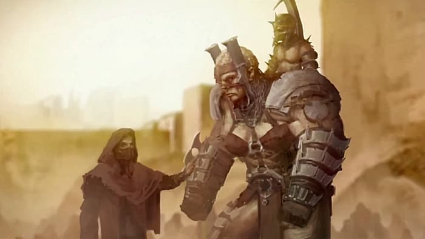
For many years, Ferra and Torr were a symbiotic pair, as is natural with their species.
But that bond was broken when Ferra came of age and began the Great Transformation... Ferra/Torr returned to the Tarkatan Wastes, where Ferra began her metamorphosis. The process took an agonizing three Outworld years - during which time Torr withered
and died.
Now a brute, Ferra will be chosen by a rider. A new symbiotic pairing will be forged - and new battles will be won.
Jacqui Briggs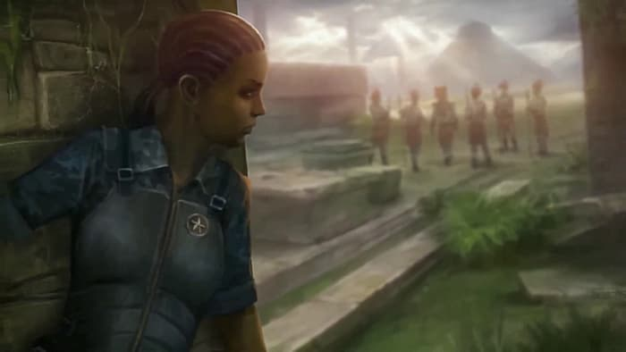 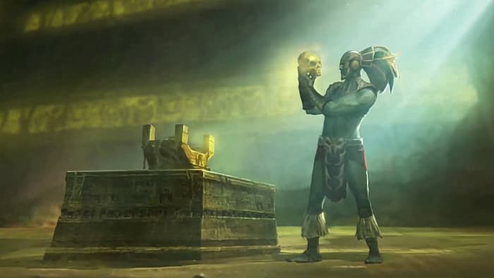 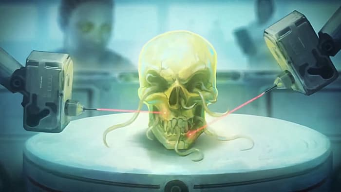
After his incursion into Earthrealm, Kotal Kahn had become a prime target of Special Forces surveillance. Jacqui Briggs was assigned to monitor his activity. Jacqui followed Kotal Kahn to an equatorial jungle, where he entered a hidden pyramid.
Inside he retrieved a glowing crystal skull. Jacqui attacked the emperor and raced away with the object.
Jacqui was praised for her work - but couldn't help thinking her interference was what Kotal Kahn had wanted all along...
Jax Briggs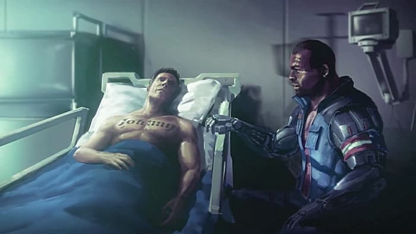 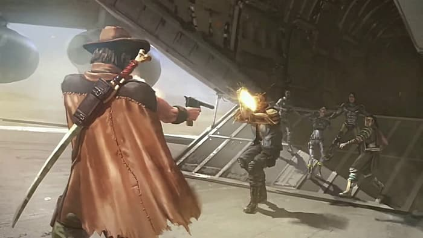 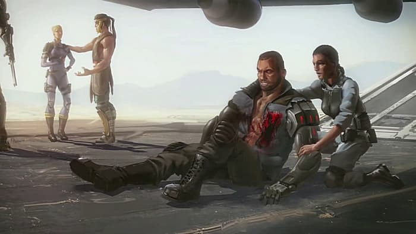
After Shinnok's fall, the hospitalized Johnny Cage asked Jax to fill in as leader of his squad. Jax agreed. It was a chance to spend time with - and protect - Jacqui.
Boarding their transport after a routine mission, Jax's greatest fears were realized, as the mercenary Erron Black sprung from the cargo bay and fired on the young heroes. Fortunately for Jacqui and company, Jax's quick reflexes and bulletproof arms deflected
the assassin's rounds.
Jax quickly subdued Black. Then slipped into shock as a red stain engulfed his chest.
Johnny Cage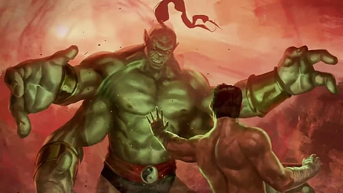 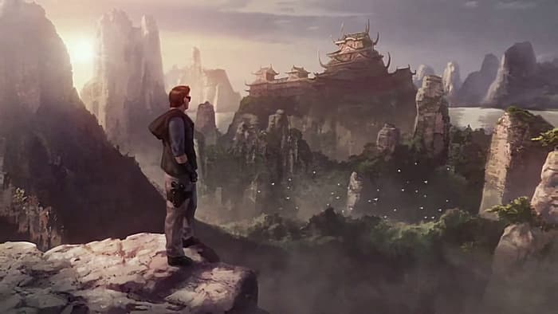 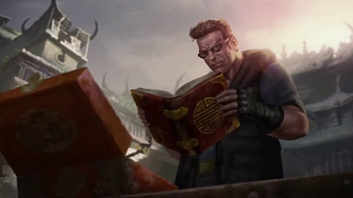
Johnny Cage's life had turned out to be stranger than any science fiction film, but he knew the final scene was approaching.
With Raiden's direction, Johnny was able to sail to Shang Tsung's abandoned island fortress, where his adventure had begun, to contemplate his future.
Amid the rubble, Johnny found an ancient tome. Its pages revealed that Shang Tsung had unraveled the secret to Edenian long life. Johnny Cage's retirement would have to wait.
Kano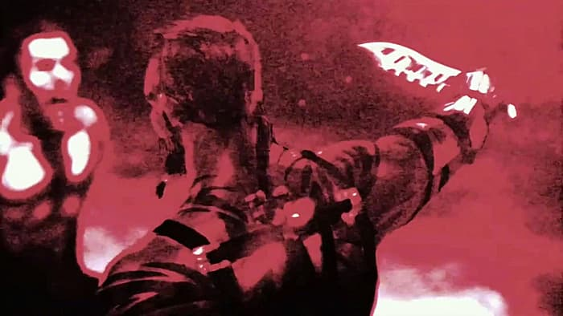 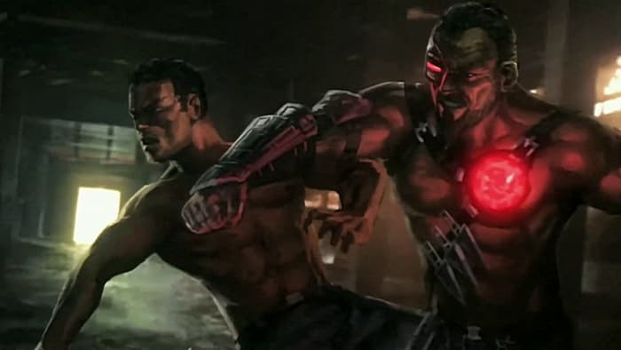 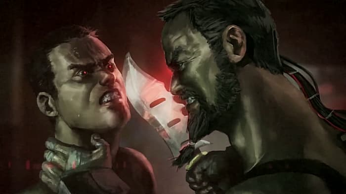
Kano had always been a survivor. But even he would one day succumb to fate. His ideals of ruthless terror would die with him - unless he could pass on his methods to a new generation... Kombat, weapons, high-tech sabotage, torture... All would be part
of the curriculum.
But before his students could learn his techniques, Kano would beat the weakness out of them. They would understand... or die trying.
Kano's first pupil? His own son. Class was now in session.
Kenshi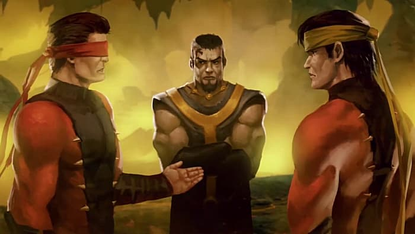 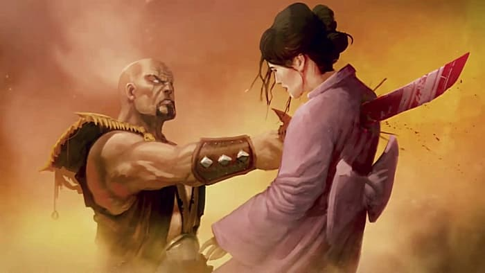 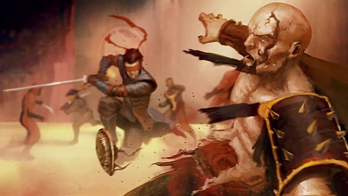
Having defeated Shinnok, Kenshi joined Takeda on his quest to avenge his mother Suchin's murder. Their travels took them to a cave where he and Takeda freed a man, Taven, encased in a stalagmite.
Kenshi told Taven that his brother, Daegon, was the founder of the Red Dragon assassin clan. Daegon had not only murdered Suchin, but his and Taven's parents as well.
Together, Kenshi, Takeda and Taven laid siege to the Red Dragon base. Daegon fell victim to Kenshi's rage. Suchin's murder had been avenged.
Kitana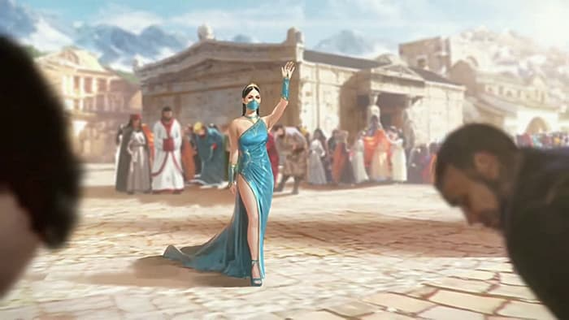 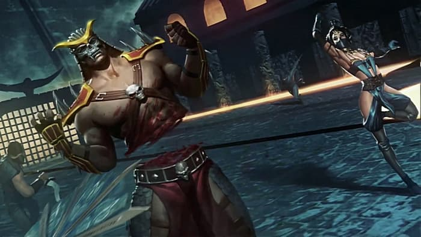 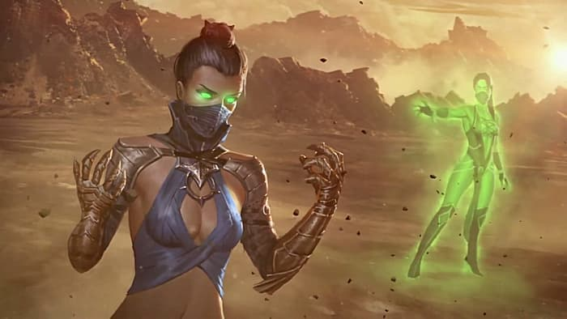
Kitana found herself walking the streets of a magnificent, shining city. This was Edenia, a realm freed from Outworld. And Kitana was its beautiful queen. This was the timeline unaltered by Raiden.
Earthrealm had been destroyed by Shao Kahn, but Kitana had survived Armageddon and united the other realms to destroy him. Long-lasting peace was the result.
Kitana awoke from his vision to find herself in the Netherrealm. She was not the queen of Edenia, but a revenant of Hell. And she hated Raiden for it.
Kotal Kahn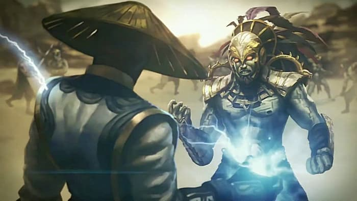 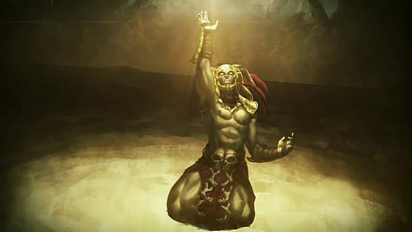 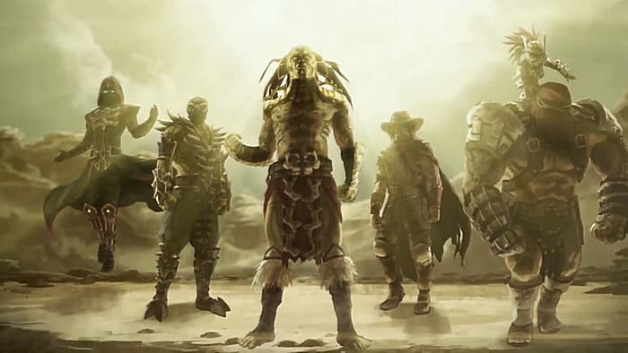
Kotal Kahn returned to Outworld determined to rebuild his forces. But Raiden defeated him in a surprise attack and claimed dominion over Outworld.
Desperate, the emperor called upon the Elder Gods to aid in preserving his sovereignty. They granted his request, invoking the most sacred of contests.
Now once every decade, Kotal Kahn must enlist his greatest defenders to face Raiden's challengers... ...in Mortal Kombat.
Kung Jin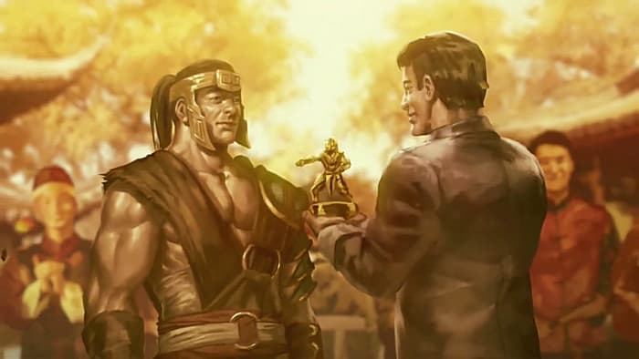 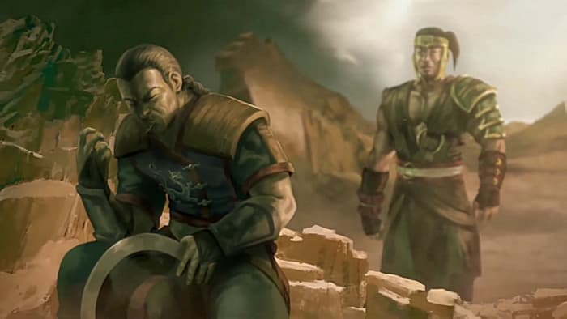 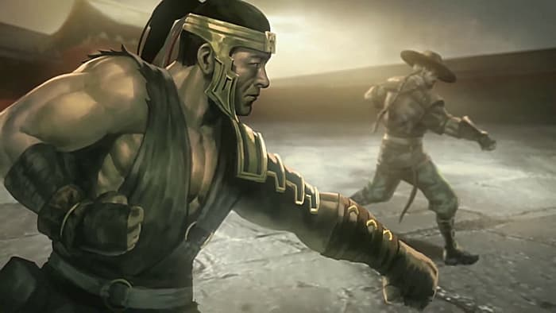
For his role in saving Earthrealm, Kung Jin's family created a statue in his likeness, for inclusion in Raiden's revered collection. But Kung Jin's thoughts were with one no longer accepted by his family: Kung Lao.
Kung Jin set out to locate his cousin - and found him in the Netherrealm. Raiden believed Kung Lao's tortured soul was forever trapped without Quan Chi's magic to free him.
But Kung Jin knew the Shaolin were stronger than any sorcerer's spell. He vowed to help Kung Lao fight off the evil that had remade him.
Kung Lao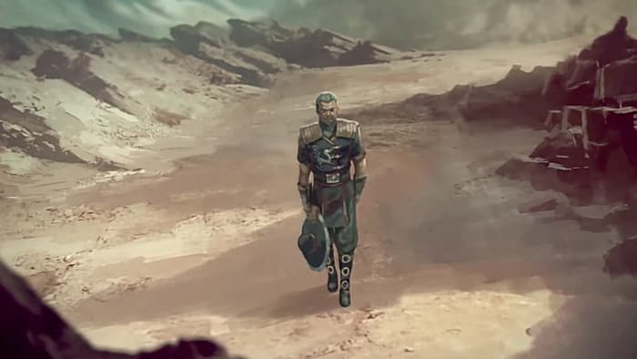 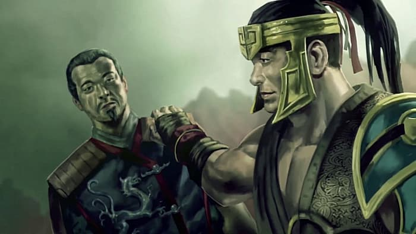 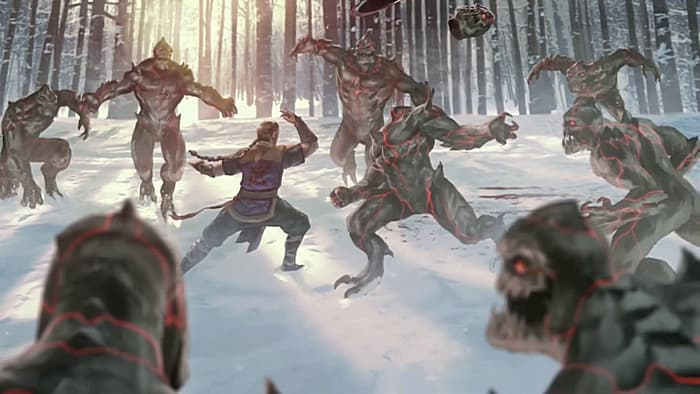
After Shinnok's defeat, Kung Lao found himself trapped in the Netherrealm, his soul corrupted by Quan Chi's dark magic. There he would have remained but for the aid of his cousin Kung Jin.
Together, their Shaolin strength repelled the evil sufficiently enough for Kung Lao to escape that dark realm and control his inner demons. Compromised but not lost, Kung Lao now exists as an agent of vengeance.
He will show evil no mercy.
Liu Kang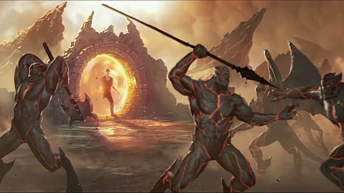 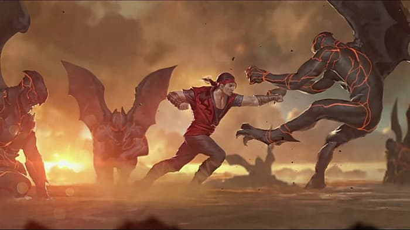 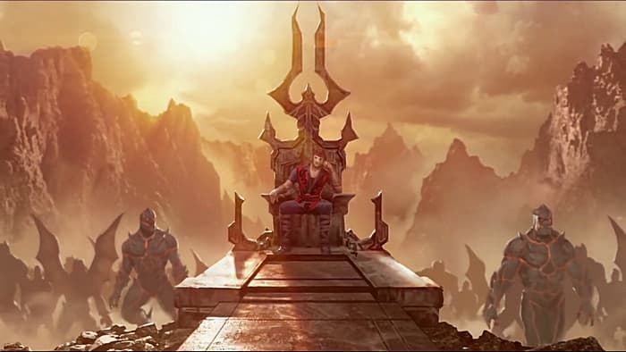
With Shinnok defeated, Liu Kang explored the Netherrealm - a world that, without Shinnok's controlling power, had descended into chaos.
Liu Kang was no sorcerer or Elder God, but his fighting skill was more than enough to beat Netherrealm's demons into submission.
Liu Kang realized that Netherrealm was his for the taking - and that ruling appealed to him. He would assume Shinnok's throne - and ponder the konquering of other realms.
Mileena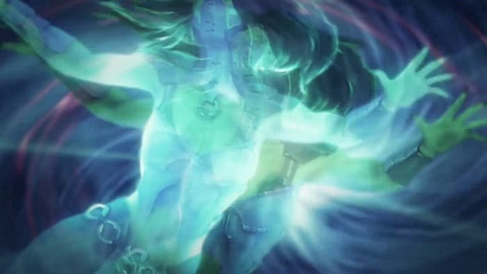 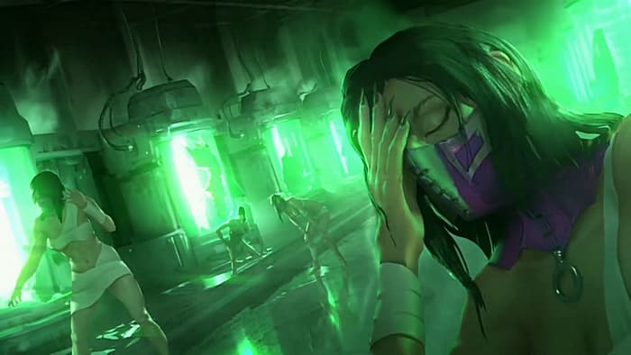 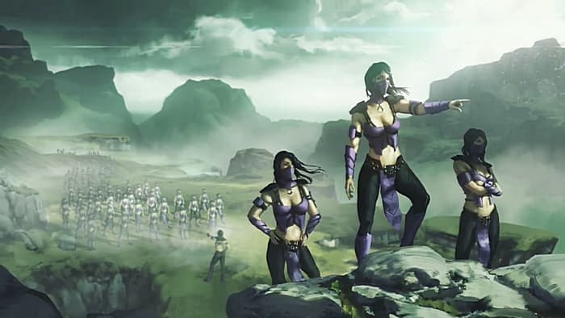
Overcome with exertion, Mileena collapsed and felt her soul gliding through the ether. She awoke in an incubation chamber.
Nearby were countless others - each containing an exact copy of her. Mileena found she could read each being's mind, and they hers.
They quickly realized the benefit of so many fierce warriors sharing one mind. As they plotted revenge on their enemies, the architect of the Mileena's awakening laughed quietly.
Quan Chi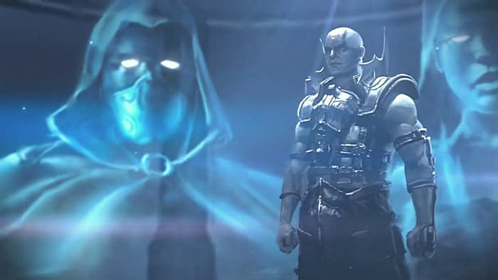 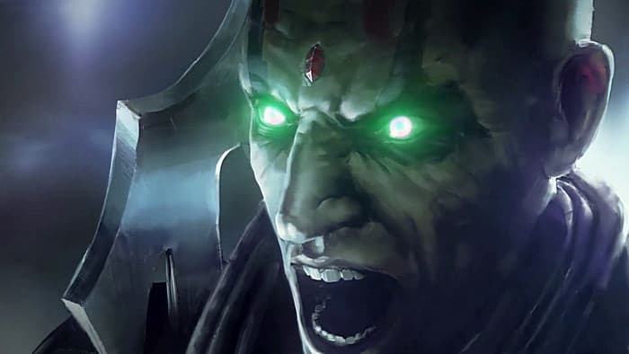
Quan Chi had long been a servant of Shinnok; his role in freeing him from imprisonment had not gone unnoticed by the Elder Gods. Shinnok was no longer a threat, but Quan Chi's actions had given rise to a new power.
After much deliberation, the Elder Gods contrived a plan to rebalance this power before it grew further. Free will was burned from Quan Chi's soul and replaced with a single directive...
...He must kill Raiden.
Raiden
After millennia of fending off Earthrealm's enemies, Raiden began to wonder if defense was the best path to peace.
In a change of tactics, Raiden and the Shirai Ryu attacked Kotal Kahn's armies before they could rebuild. They decimated the emperor's forces, leaving Outworld at their mercy.
The victorious Raiden claimed dominion over Outworld. The first of many threats to Earthrealm had been removed.
Reptile
After Shinnok's defeat, Reptile was ordered to Earthrealm by Kotal Kahn, to assess the damage. Such intel could prove useful in future konflicts.
Stumbling upon a collapsed cavern exposed during the crisis, Reptile was shocked to see Raptors emerging from within. Unlike the rest of his race, these Raptors had never left Earthrealm for the doomed realm of Zaterra, and thus had remained safe and hidden.
Alone no more, Reptile vowed to remain with his rediscovered people - and reclaim their Earthrealm homeland.
Scorpion
Remorse for his role in resurrecting Shinnok weighed heavily upon Scorpion's soul. His desire for vengeance had brought Earthrealm to the brink of destruction.
Scorpion offered to perform Hara Kiri to atone for his offense. But Raiden suggested a more productive alternative. Instead of death, Raiden sentenced Scorpion to life.
He imbued Scorpion with a small portion of the Jinsei's power, linking him to Earthrealm's essence. Scorpion and his Shirai Ryu clan would protect the Jinsei and Earthrealm forever.
Shinnok (Boss/Unlockable - Complete Story Mode)
Earthrealm belonged to Shinnok. It became the staging area from which he would finish his war on the Elder Gods, which began eons ago. The Elder Gods had lied to the denizens of the realms: They were not individual beings, but merely parts of a greater
collective known as the One Being.
Shinnok would merge the realms and awaken him.
Whole once more, the One Being devoured the Elder Gods. Shinnok watched with satisfaction. This reality had finally come to an end.
Sonya
Exhausted by her ordeals, Sonya slipped into a deep sleep and began to dream. Kano held Jax and Cassie hostage. He made Sonya choose who would live and who would die.
Seeing no way to free them both, she chose Cassie - and screamed as Kano killed Jax before her eyes. Still screaming, she was awoken by Johnny.
He had horrific news. Jax was dead by an assassin's bullet.
Sub-Zero
Grandmaster Sub-Zero knew his Lin Kuei clan would need more than martial arts to stave off future threats to Earthrealm. In the frozen reaches of Outworld, he found the answer: a female frost dragon with a clutch of eggs.
With his ability to freeze, Sub-Zero hatched the dragon-lings. They accepted their Lin Kuei masters and their training as kombat mounts.
With a force of dragon riders, the Lin Kuei's ferocity became legend. None dared risk konflict with Earthrealm.
Takahashi Takeda
With Shinnok defeated, Takeda and his father set out to find his mother's killer, a member of the Red Dragon clan. Special Forces tech enabled Takeda to locate the clan's base - and disguise himself and Kenshi as they infiltrated their ranks.
Deep within the mountain stronghold, Takeda discovered an actual dragon, a prisoner of the clan. The creature used its magic to divine the murderer's name, then transport Takeda and Kenshi to a faraway cave.
There they discovered a man encased in a stalagmite. The dragon had said this man would also have reason to confront Suchin's killer. Takeda began to free him...
Goro (Sub-Boss/DLC)
The Shokan had become outcasts for refusing to aid either side in the Outworld Civil War. But with the konflict over, Prince Goro decided to reenter the political landscape.
Kotal Kahn's armies were weak from years of battle. Mileena's rebels were scattered. It was an easy matter for the Shokan to seize control.
The newly crowned Emperor Goro had his rivals exterminated. No Osh-Tekk, Kytinn, Edenian or Tarkatan would usurp his throne.
Jason Voorhees (DLC)
Like Scorpion, Jason Voorhees was a revenant: a vengeful spirit returned to life. Hundreds had fallen victim to his bloodlust.
Liu Kang, now ruler of the Netherrealm, took notice. An immortal killer like Jason would be useful in his plans for konquest.
He drew Jason into the Netherrealm and offered him an endless bounty of slaughter... in return for his allegiance. Jason's simple reply was to destroy Liu Kang.
Tanya (DLC)
With Mileena executed, Tanya's dreams of a free Edenia seemed dead as well. She and the other rebels were fugitives from Kotal Kahn's justice.
Her fellow Edenian Rain had proved a powerful ally and a satisfactory konsort. But he had become useless to her.
In exchange for leniency, Tanya informed the Kahn of Rain's whereabouts. Imprisoned but alive, Tanya's plotting began anew.
Predator (DLC)
This world called Earth produced many worthy opponents - which made for excellent sport. Some possessed a power previously unknown to the Predator's race: sorcery.
The Predator sought to harness this new power for use in his konquests. He analyzed a trophy from a recent battle and eventually discovered its secrets.
With the power of sorcery, the predator was unstoppable and decimated whole worlds single-handedly. He had become the Apex Predator.
Tremor (DLC)
Standing over Shinnok, Tremor reveled in his power. Much had changed since the Black Dragon's excursion to the Dream Realm.
Kano had sent Tremor's team there to retrieve a "psycho-bomb", to be used in Kano's theft of Shinnok's Amulet. Exposure to that realm had increased Tremor's power - and expanded his mind.
He would evolve into an Earth elemental: a demi-god who's power would rival that of Raiden and Fujin.
Triborg (DLC)
After destroying Shinnok, Triborg turned his attention to the Special Forces. General Blade and the others fought valiantly, but their human weaknesses led to their inevitable defeat.
Now with access to the S-F computer network, Triborg used it to interface with the Lin Kuei storage drives from which he was spawned. He saved the brainwave data of dozens of his Lin Kuei brothers and sisters to the S-F servers. The S-F laboratories provided
the materials necessary for Triborg to create cybernetic bodies for each one. Soon the downloads were complete.
The Cyber Lin Kuei had been reformed, but because Sub-Zero had forever sullied the clan's name, Triborg decided to begin anew. He would henceforth be known as the leader of the deadliest clan in all the realms: The Tekunin.
Leatherface (DLC)
Leatherface had cut down the old man in the strange outfit. Maybe now that he was dead, the pretty yellow haired gum chewing girl would notice Leatherface.
Putting on his finest "mask", Leatherface found the army camp where the pretty girl could be found most days. He had to cut through a few guards and more than a few of her friends to get to her, but it was worth it. He pulled out the old man's
face, which he'd saved for the girl as a present. The girl didn't want the present. And she wasn't being nice.
So Leatherface chopped her into tiny pieces for Drayton to use in his chili. He then took off his mask and set to work on the girl's face. If she wasn't going to be his girlfriend, she could be his in other ways.
Bo' Rai Cho (DLC)
Having learned that Outworld was now protected by the Mortal Kombat tournament, Bo' Rai Cho returned to defend his homeworld. He was no friend of Kotal Kahn, but no realm deserved subjugation.
Bo' Rai Cho began training Outworld warriors for the fight to come. With Bo' Rai Cho's fighting skills and leadership, Outworld repelled the Earthrealm aggressors.
His former friend Raiden had been denied.
Xenomorph (DLC)
The Alien tore through Shinnok's flesh, reducing him to a bloody pulp. The creature then returned to its nest in Outworld. It continued to venture forth looking for suitable hosts for use in establishing a new hive.
The Alien found more than a few intriguing species and dragged them back to its lair. Once a queen had been spawned, the Alien's new hive multiplied quickly and spread unchecked throughout the realm.
Emperor Kotal Kahn attempted to save Outworld in a desperate final attack on the Aliens' main nesting ground. The attack failed. Outworld belonged to the Aliens.